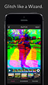
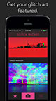
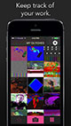
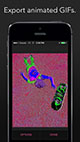
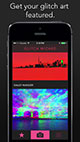
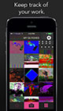
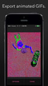
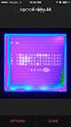
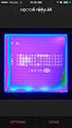

more press info than you need
Details
- Created by: Allan Lavell (@allanlavell) and Connor Bell (@ConnorBellNS) of indie studio ThinkRad
- Price: Launch sale $0.99, normal price $1.99
- Launch Date: Tuesday, September 2nd, 2014
- Full Press Kit Download (ZIP)
- App Store Link (Once it's launched)
- Requirements: iOS 7 or higher. iPhone 4 or higher. iPad 2 or higher. iPod touch 5 or higher.
Screenshots
 





 



Elevator Pitch
Glitch Wizard gives you the power to glitch photos, create animated GIFs and share them to multiple social networks. Glitch Wizard runs images through audio filters, manipulates image hex, and performs a host of other experimental techniques that create unpredictable, beautiful results. It is the first app to export animations created through the process of glitching an image.
Press Release for september 2nd
First Look: Glitch Wizard for iOS - Glitch. GIF. Share.
Launching today, Glitch Wizard (half-price sale at $0.99) gives you the power to glitch photos, create animated GIFs and share them to multiple social networks. Glitch Wizard runs images through audio filters, manipulates image hex, and performs a host of other experimental techniques that create unpredictable, beautiful results. It is the first app to export animations created through the process of glitching an image.
In Glitch Wizard, each glitch applied to an image creates a new frame of an animation. The resulting sequence can be played back, exported as a GIF or as a MOV, and shared directly to Twitter, Tumblr, Instagram and Facebook.
Glitch Wizard promotes the hard work of its wizards. Featured glitches, drawn directly from a curated Tumblr, are shown front and center when you open the app.
Check out ThinkRad’s live-action trailer to get a true sense of the aesthetic: unlisted YouTube link available upon request
About ThinkRad Studios - ThinkRad is an independent programming studio run by Allan Lavell and Connor Bell, based out of Halifax, Nova Scotia, Canada. ThinkRad makes '80s-style games and '90s-style apps, to satisfy the needs of both the nostalgic arcade lover and the modern iPhone haver. http://thinkrad.net


{kind=link}
{kind=link}
{kind=link}
{kind=link}
{kind=link}